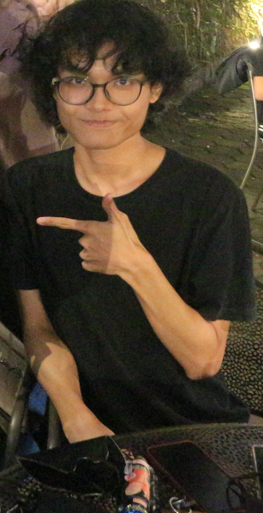

Dwiki A's Capstone Project

-
Summary
- Detail-oriented entry-level data entry with six months of experience maintaining a 99% accuracy rate
while entering large volumes of data into databases.
-
Education
- UNIVERSITY PASUNDAN Bandung, Indonesia International Relations Major (GPA: 3.37/4.00)
-
Work Experience
- Data Entry (Freelance) | Nutritional Working Group (NWG) | | 07/23 – Present |
- Inputting large volumes of data into REDcap database systems, maintaining an 99% accuracy
rate. Achieved fast completion of weekly targets.
- Developed and implemented new data entry procedures and standards
- Collaborated with cross-functional teams to troubleshoot and resolve data entry errors
-
Skills
- Microsoft Office (Word, Powerpoint, Excel), Google Suites (Gdocs, Gsheet), Graphic Design (Adobe
Photoshop, adobe illustrator, Canva dan Blender)